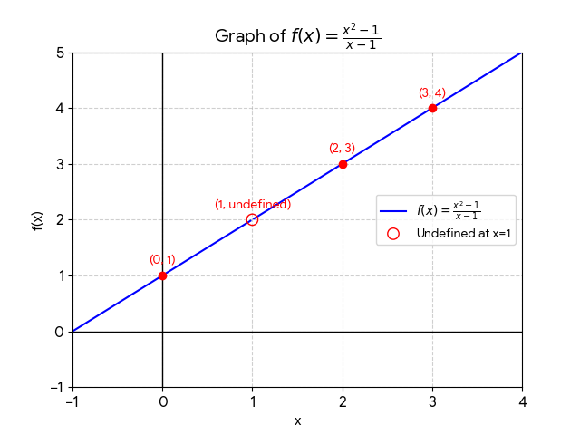
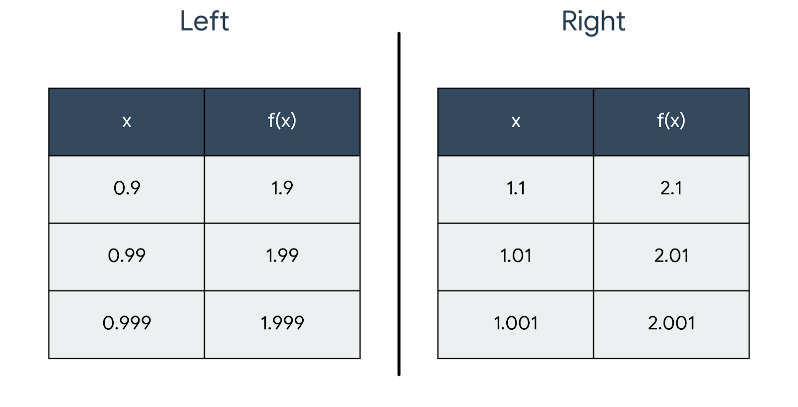

Limit is the value which shows what is f(x) moving toward for a specific value of x.it describes the functions behaviour near a point rather than its value at a point.
A limit is the value that a function f(x) approaches as the input x gets closer and closer to a specific point c.
Limit is denoted as limx–>cf(x)=L,lim is the short form of which will stay same at every place.x->c represents the value of x is getting closer to c.f(x) is the function used to read more about function click here.L is the value towards which f(x) moves.
We are using f(x)=x²-1/x-1. we see the broken graph at x=1 as f(x) for 1 is undefined as the numerator becomes 0.

graph of f(x)=x²-1/x-1 for limit with hole
Graph lying towards left is approaching from left and is denoted by limx–>c-f(x)=L in this case it is limx–>1-f(x)=2
Graph lying towards right is approaching from right is denoted by limx–>c+f(x)=L in this case it is limx–>1+f(x)=2
To calculate limit graphically we look where is the graph heading for a value of x.we don't directly take x but we get closer and closer to x.
to calculate limit from a table we take values from both left and right. the example is of limx–>1f(x)=\frac{x²-1}{x-1}.

table of value
we can see as the value of x gets closer to 1 the value of f(x) gets closer to 2.
Note:- if you will take x directly as 1 then it will come as undefined not 2
A limit only exists when limx–>a-f(x)=limx–>a+f(x) as in the example above left limit is 2 and right limit is 2 so the limit exist.
Limits were used in 3rd century BCE by Archimedes and Eudoxus of Cnidus which they called "Method of Exhaustion" but the limits which we use today were given by Isaac Newton and Gottfried Wilhelm Leibniz in around 1687.